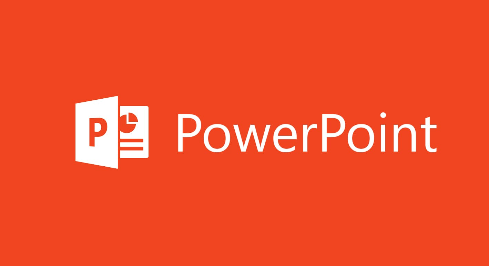

O que é?
O Power Point é um programa desenvolvido pela Microsoft e serve para a criação de apresentações de slides, para isso, o software possui uma série de ferramentas e recursos disponíveis. Uma das suas grandes vantagens é a fácil utilização, até mesmo por principiantes.
Após finalizar a edição de sua apresentação no programa, você poderá exibi-la em computadores, retroprojetores e até mesmo pelo celular.
| Atalhos |
Funções |
| Ctrl+O |
Criar nova apresentação. |
| Ctrl+M |
Adicionar um novo slide. |
| Ctrl+N |
Colocar o texto selecionado em negrito. |
| ALT + H, F, S |
Alterar o tamanho da fonte para o texto selecionado. |
| Alt+W, Q |
Abrir a caixa de diálogo zoom . |
| Ctrl+X |
Recortar o texto, objeto ou slide selecionado. |
| Ctrl+C |
Copiar o texto, objeto ou slide selecionado. |
| Ctrl+V |
Colar o texto, objeto ou slide recortado ou copiado. |
| Ctrl+Z |
Desfazer a última ação. |
| Ctrl+S |
Salve a apresentação. |
voltar